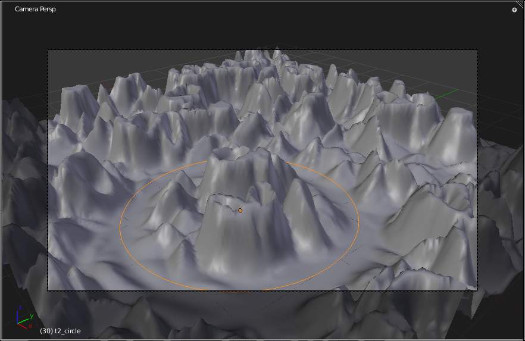
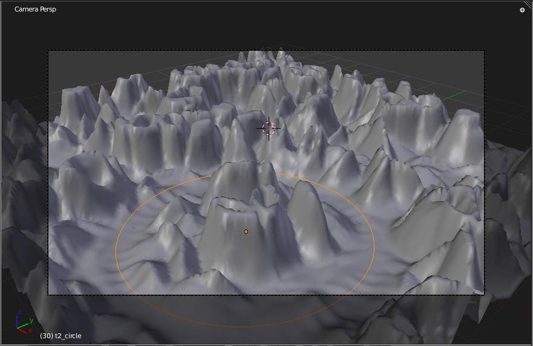
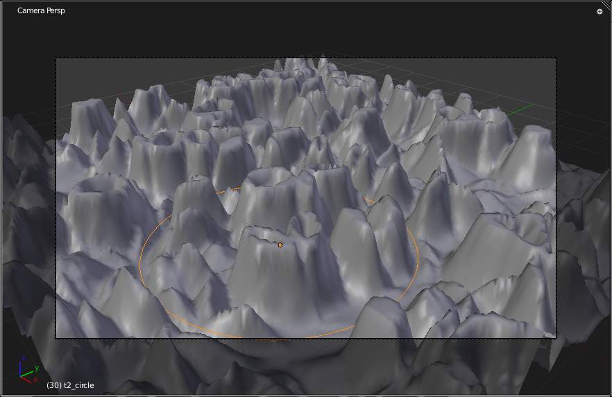
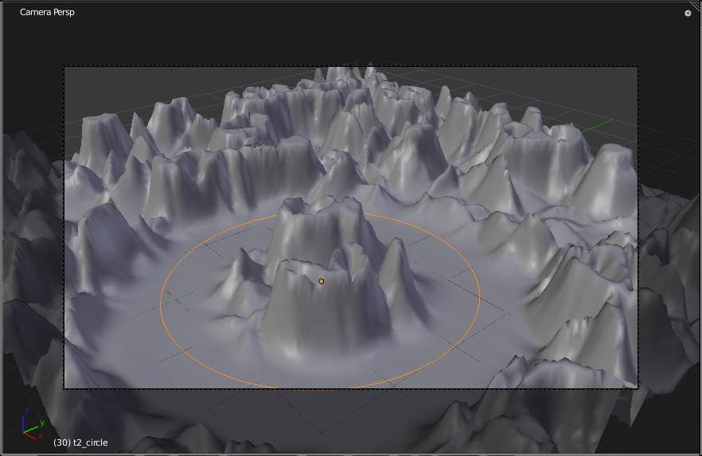
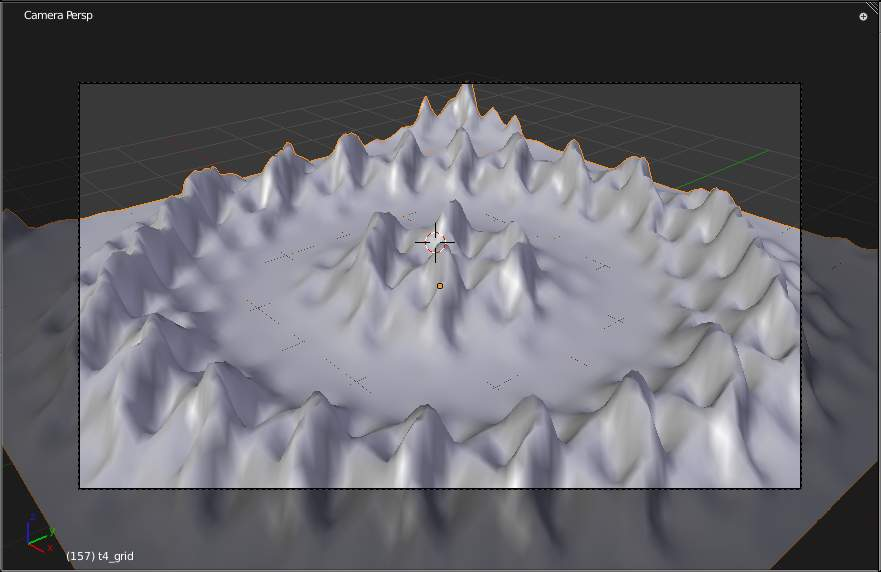
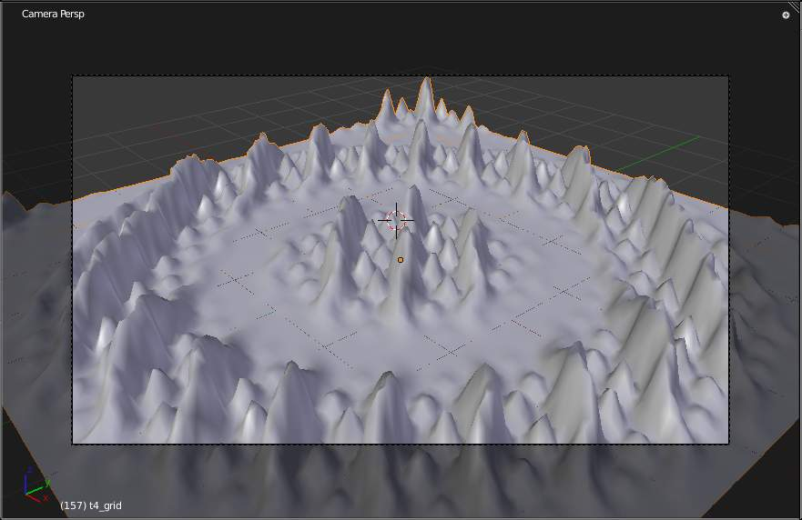
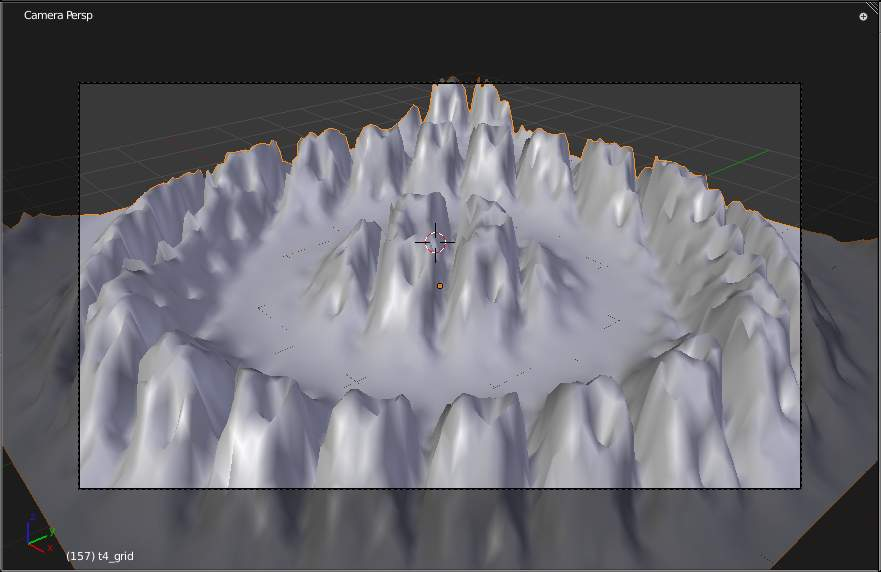
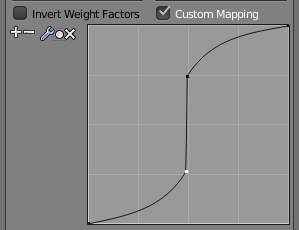
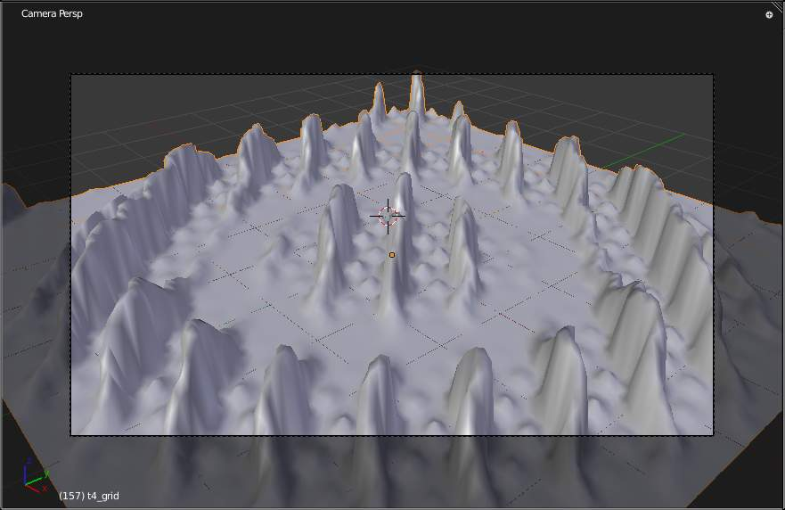

Vertex Weight 修改器¶
The Vertex Weight modifiers work on a vertex group of the affected object, by modifying its weights and/or which vertices belong to the vertex group.
Warning
These modifiers do implicit clamping of weight values in the standard (0.0 to 1.0) range. All values below 0.0 will be set to 0.0, and all values above 1.0 will be set to 1.0.
There are currently three Vertex Weight modifiers:
Common 设置¶
{kind=link}
The influence/masking part of Vertex Weight modifiers.
The three Vertex Weight modifiers share a few settings, controlling their influence on the affected vertex group.
- Global Influence
- The overall influence of the modifier (0.0 will leave the vertex group’s weights untouched, 1.0 is standard influence).
Warning
Influence only affects weights, adding/removing of vertices to/from vertex group is not prevented by setting this value to 0.0.
- Vertex Group Mask
- An additional vertex group, the weights of which will be multiplied with the global influence value for each vertex. If a vertex is not in the masking vertex group, its weight will be not be affected.
- Texture
An additional texture, the values of which will be multiplied with the global influence value for each vertex.
This is a standard texture data-block control. When set, it reveals other settings:
- Texture Coordinates
How the texture is mapped to the mesh.
- Local
- Use local vertex coordinates.
- Global
- Use vertex coordinates in global space.
- Object
- Use vertex coordinates in another object’s space.
- UV
- Use a UV layer’s coordinates.
- Use Channel
Which channel to use as weight factor source/
- Red/Green/Blue/Alpha
- One of the color channels’ values.
- Intensity
- The average of the RGB channels (if RGB(1.0, 0.0, 0.0) value is 0.33)
- Value
- The highest value of the RGB channels (if RGB(1.0, 0.0, 0.0) value is 1.0)
- Hue
- Uses the hue value from the standard color wheel (e.g. blue has a higher hue value than yellow)
- Saturation
- Uses the saturation value (e.g. pure red’s value is 1.0, gray is 0.0)
Note
All of the channels above are gamma corrected, except for Intensity.
- Object
- The object to be used as reference for Object mapping.
- UV Layer
- The UV layer to be used for UV mapping.
Viewing Modified Weights¶
You can view the modified weights in 权重绘制模式. This also implies that you will have to disable the Vertex Weight modifiers if you want to see the original weights of the vertex group you are editing.
Vertex Weight Edit Modifier¶
{kind=link}
The Vertex Weight Edit modifier panel.
This modifier is intended to edit the weights of one vertex group.
The general process is the following, for each vertex:
- (Optional) It does the mapping, either through one of the predefined functions, or a custom mapping curve.
- It applies the influence factor, and optionally the vertex group or texture mask (0.0 means original weight, 1.0 means fully mapped weight).
- It applies back the weight to the vertex, and/or it might optionally remove the vertex from the group if its weight is below a given threshold, or add it if it’s above a given threshold.
Options¶
- Vertex Group
- The vertex group to affect.
- Default Weight
- The default weight to assign to all vertices not in the given vertex group.
- Falloff Type
Type of mapping:
- Linear
- No mapping.
- Custom Curve
- Allows the user to manually define the mapping using a curve.
- Sharp, Smooth, Root and Sphere
- These are classical mapping functions, from spikiest to roundest.
- Random
- Uses a random value for each vertex.
- Median Step
- Creates binary weights (0.0 or 1.0), with 0.5 as cutting value.
- Group Add
- Adds vertices with a final weight over Add Threshold to the vertex group.
- Group Remove
- Removes vertices with a final weight below Remove Threshold from the vertex group.
Vertex Weight Mix Modifier¶
{kind=link}
The Vertex Weight Mix modifier panel.
This modifier mixes a second vertex group (or a simple value) into the affected vertex group, using different operations.
Options¶
- Vertex Group A
- The vertex group to affect.
- Default Weight A
- The default weight to assign to all vertices not in the given vertex group.
- Vertex Group B
- The second vertex group to mix into the affected one. Leave it empty if you only want to mix in a simple value.
- Default Weight B
- The default weight to assign to all vertices not in the given second vertex group.
- Mix Mode
How the vertex group weights are affected by the other vertex group’s weights.
- Replace weights
- Replaces affected weights with the second group’s weights.
- Add to weights
- Adds the values of Group B to Group A.
- Subtract from weights
- Subtracts the values of Group B from Group A.
- Multiply weights
- Multiplies the values of Group B with Group A.
- Divide weights
- Divides the values of Group A by Group B.
- Difference
- Subtracts the smaller of the two values from the larger.
- Average
- Adds the values together, then divides by 2.
- Mix Set
Choose which vertices will be affected.
- All vertices
- Affects all vertices, disregarding the vertex groups content.
- Vertices from group A
- Affects only vertices belonging to the affected vertex group.
- Vertices from group B
- Affects only vertices belonging to the second vertex group.
- Vertices from one group
- Affects only vertices belonging to at least one of the vertex groups.
- Vertices from both groups
- Affects only vertices belonging to both vertex groups.
Warning
When using All vertices, Vertices from group B or Vertices from one group, vertices might be added to the affected vertex group.
Vertex Weight Proximity Modifier¶
{kind=link}
The Vertex Weight Proximity modifier panel.
This modifier sets the weights of the given vertex group, based on the distance between the object (or its vertices), and another target object (or its geometry).
Options¶
- Vertex Group
- The vertex group to affect.
- Target Object
- The object from which to compute distances.
- Proximity mode
- Object Distance
- Use the distance between the modified mesh object and the target object as weight for all vertices in the affected vertex group.
- 几何体 Distance
- Use the distance between each vertex and the target object, or its geometry.
The 几何体 Distance mode has three additional options, Vertex, Edge and Face. If you enable more than one of them, the shortest distance will be used. If the target object has no geometry (e.g. an empty or camera), it will use the location of the object itself.
- Vertex
- This will set each vertex’s weight from its distance to the nearest vertex of the target object.
- Edge
- This will set each vertex’s weight from its distance to the nearest edge of the target object.
- Face
- This will set each vertex’s weight from its distance to the nearest face of the target object.
- Lowest
- Distance mapping to 0.0 weight.
- Highest
- Distance mapping to 1.0 weight.
- Falloff Type
- Some predefined mapping functions, see Vertex Weight Edit Modifier.
Tip
Lowest can be set above Highest to reverse the mapping.
例子s¶
Using Distance from a Target Object¶
As a first example, let us dynamically control a Wave modifier with a modified vertex group.
Add a Grid mesh with (100×100) x/y subdivisions and a 5 BU Radius
Switch to 编辑模式
Tab, and in the Object Data properties, Vertex Groups panel, add a vertex group. Assign to it all your mesh’s vertices with 1.0 weight.Go back to 物体模式. Then, go to the 修改器 properties, and add a Vertex Weight Proximity modifier. Set the Distance mode to Object. Select your vertex group, and the target object you want.
You will likely have to adjust the linear mapping of the weights produced by the Vertex Weight Proximity modifier. To do so, edit Lowest Dist and Highest Dist so that the first corresponds to the distance between your target object and the vertices you want to have lowest weight, and similarly with the second and highest weight...
If your lamp is at Z-hight of 2 then set the settings for the weight proximity modifier to: Lowest: 2 and highest: 7 (this will stop the waves under the lamp) If you want waves to be only under the lamp, set the lowest to 7 and highest to 2.
Now add a Wave modifier, set it to your liking, and use the same vertex group to control it. 例子 settings-speed: 0.10 , Height: 1.0 , Width 1.50 , Narrowness: 1.50.
Animate your target object, making it move over the grid. As you can see, the waves are only visible around the reference object! Note that you can insert a Vertex Weight Edit modifier before the Wave one, and use its Custom Curve mapping to get larger/narrower “wave influence’s slopes”.
The Blender file, TEST_1 scene.
Using Distance from a Target Object’s 几何体¶
We’re going to illustrate this with a Displace modifier.
Add a (10×10 BU) 100×100 vertices grid, and in 编辑模式, add to it a vertex group containing all of its vertices, as above. You can even further sub-divide it with a first Subsurf modifier.
Now add a curve circle, and place it 0.25 BU above the grid. Scale it up a bit (e.g. 4.0 BU).
Back to the grid object, add to it a Vertex Weight Proximity modifier, in 几何体 Distance mode. Enable Edge (if you use Vertex only, and your curve has a low U definition, you would get wavy patterns, see Fig. Wavy patterns.).

Distance from edges. |

Distance from vertices. |
{kind=link}
{kind=link}
Set the Lowest Dist to 0.2, and the Highest Dist to 2.0, to map back the computed distances into the regular weight range.
Add a third Displace modifier and affect it the texture you like. Now, we want the vertices of the grid nearest to the curve circle to remain undisplaced. As they will get weights near zero, this means that you have to set the Midlevel of the displace to 0.0. Make it use our affected vertex group, and that is it! Your nice mountains just shrink to a flat plane near the curve circle.
As in the previous example, you can insert a Vertex Weight Edit modifier before the Displace one, and play with the Custom Curve mapping to get a larger/narrower “valley”...

Concave-type mapping curve. |

Convex-type mapping curve. |
{kind=link}
{kind=link}
{kind=link}
Vertices with a computed weight below 0.1 removed from the vertex group.
You can also add a fifth Mask modifier, and enable Vertex Weight Edit ‘s Group Remove option, with a Remove Threshold of 0.1, to see the bottom of your valley disappear.
The Blender file, TEST_2 scene.
Using a Texture and the Mapping Curve¶
Here we are going to create a sort of strange alien wave (yes, another example with the Wave modifier... but it’s a highly visual one; it’s easy to see the vertex group effects on it...).
So as above, add a 100×100 grid. This time, add a vertex group, but without assigning any vertex to it - we’ll do this dynamically.
Add a first Vertex Weight Mix modifier, set the Vertex Group A field with a Default Weight A of 0.0, and set Default Weight B to 1.0.
Leave the Mix Mode to Replace weights, and select All vertices as Mix Set. This way, all vertices are affected. As none are in the affected vertex group, they all have a default weight of 0.0, which is replaced by the second default weight of 1.0. And all those vertices are also added to the affected vertex group.
Now, select or create a masking texture. The values of this texture will control how much of the “second weight” of 1.0 replaces the “first weight” of 0.0 ... In other words, they are taken as weight values!
You can then select which texture coordinates and channel to use. Leave the mapping to the default Local option, and play with the various channels...

Using intensity. |

Using Red. |

Using Saturation. |
{kind=link}
{kind=link}
{kind=link}
Do not forget to add a Wave modifier, and select your vertex group in it!
You can use the weights created this way directly, but if you want to play with the curve mapping, you must add the famous Vertex Weight Edit modifier, and enable its Custom Curve mapping.
By default, it’s a one-to-one linear mapping - in other words, it does nothing! Change it to something like in Fig. Custom mapping curve., which maps (0.0, 0.5) to (0.0, 0.25) and (0.5,1.0) to (0.75, 1.0), thus producing nearly only weights below 0.25, and above 0.75: this creates great “walls” in the waves...

A customized mapping curve. |

Custom Mapping enabled. |
{kind=link}
{kind=link}
The Blender file, TEST_4 scene.